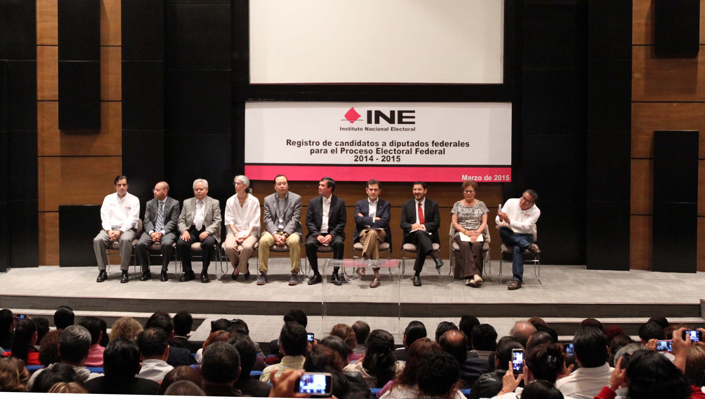

Inicio
Comités Estatales
Gobiernos de Morena
Secretarios de Estado
México, D.F.
México, D.F.

México, D.F.
Anterior
◀︎
Siguiente
▶︎
Comités
Estatales
Conoce nuestros diversos Comités Estatales y descubre qué se está llevado a cabo en estas.
Comité Ciudad de México
Conoce el calendario de actividades del comité, entérate de noticias pertinentes a Morena en el D.F, accede a nuestro portal de transparencia y más.
Comité Ciudad de México
Baja California
Descarga las fichas correspondientes a los comités pertenecientes a la zona de Baja California Sur.
Baja California Sur
Campeche
Chiapas
Chihuahua
Coahuila
Colima
Distrito Federal
Estado de México
Descarga las fichas correspondientes a los comités pertenecientes a la zona del Estado de México.
Guanajuato
Guerrero
Hidalgo
Michoacán
Morelos
Nayarit
Nuevo León
Oaxaca
Descarga las fichas correspondientes a los comités pertenecientes a la zona de Oaxaca.
Puebla
Querétaro
San Luis Potosí
Tabasco
Veracruz